Redesigning Mensio's Data Explorer for self-serve analysis
Overview
Mensio is a powerful tool that tracks brand exposure across TV and social…
Brands, teams and networks use it for sponsorship and ad intelligence. It watches every second of 185 TV networks and 2,000+ social handles, and catches 13,000+ brand logos at 99%+ accuracy.
Adding metrics, before and after
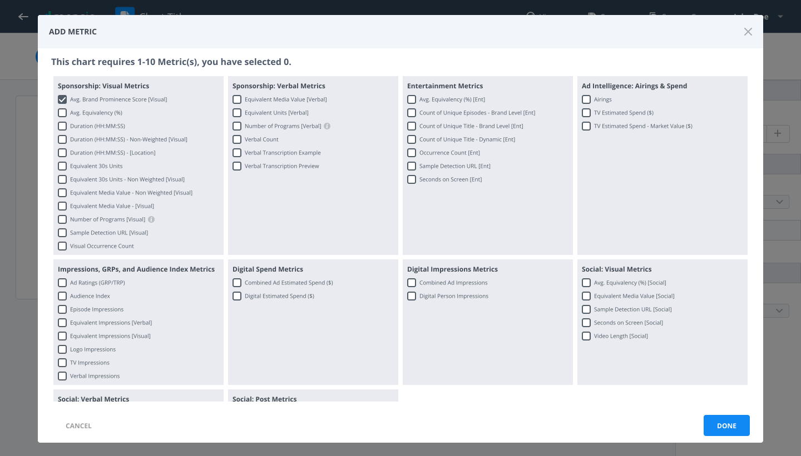
…but customers couldn't get the data out on their own.
Data Explorer showed every metric, grouping and filter at once. Customers didn't know which combination answered their question, so they leaned on Mensio's analysts to pull the data for them.
We rebuilt chart building into a new chart builder: six presets for recurring questions, and Guided Setup, a step-by-step wizard, for everything else. We shipped it in 14 weeks. The two of us pushed for guardrails on every filter, cut the entry points from three to two, and surfaced features nobody knew existed.
We rebuilt chart building around presets and Guided Setup, a step-by-step wizard, and shipped it in 14 weeks. The two of us pushed for guardrails, two entry points instead of three, and surfacing hidden features.
Starting assumption
We assumed customers were our primary users. We were wrong.
New to Mensio, we planned to start with customer pain points. Our first stakeholder conversations changed that.
What we assumed
Customers built their own charts, and their pain points would show us what to fix.
What we found
There were no documented customer pain points. Analysts were doing the work, so their workflow was what we needed to study.
We've cut the data down to only home games as we think this is the cleanest way to isolate / keep from double counting. Is this correct?
If the way we've cut the data for total EMV by team isn't the cleanest way to do it, could you please help us get there?
Consultant, strategy firm
I was playing around with the dashboard and used these filters to pull the data for each brand individually into Excel.
I just wanted to double-check that I'm doing this correctly and that the numbers look right.
Brand partner
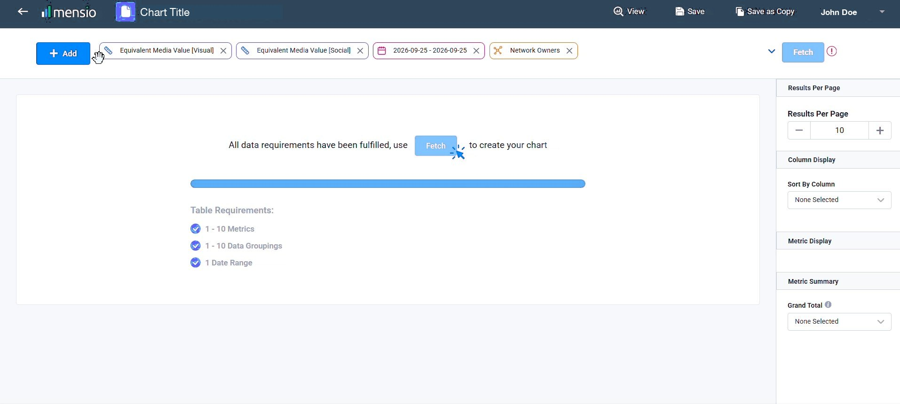
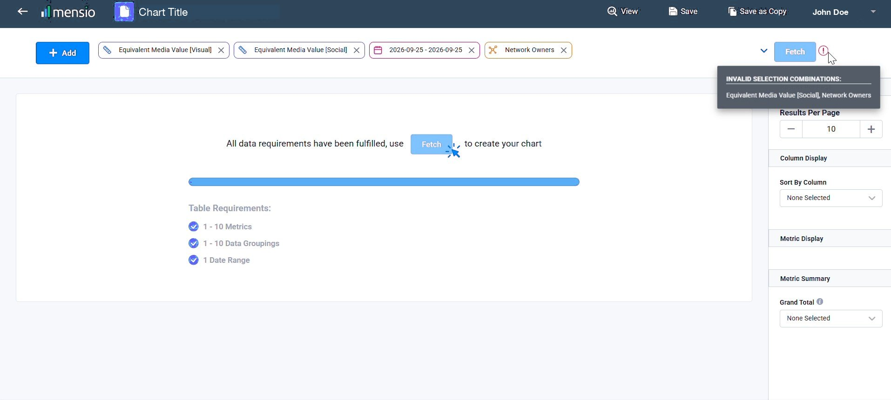
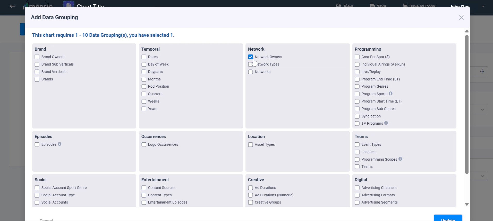
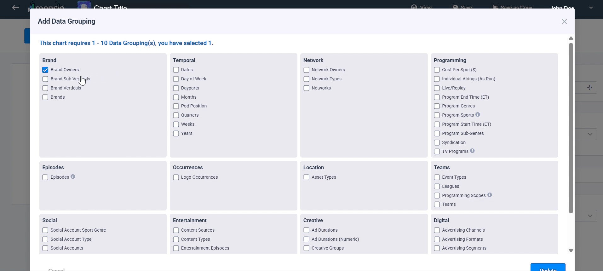
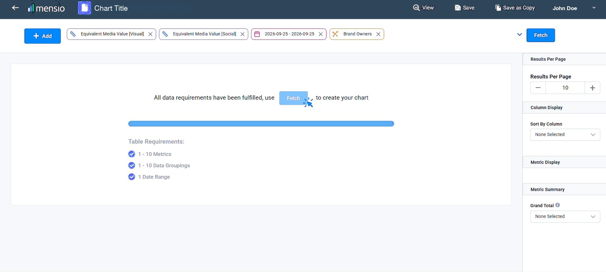
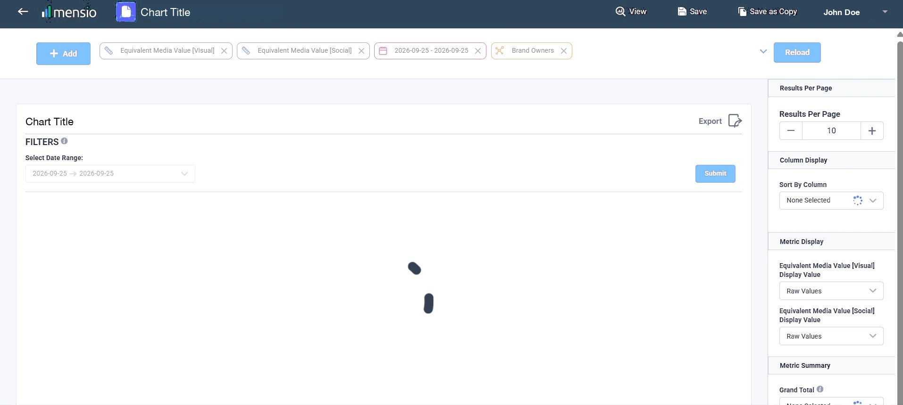
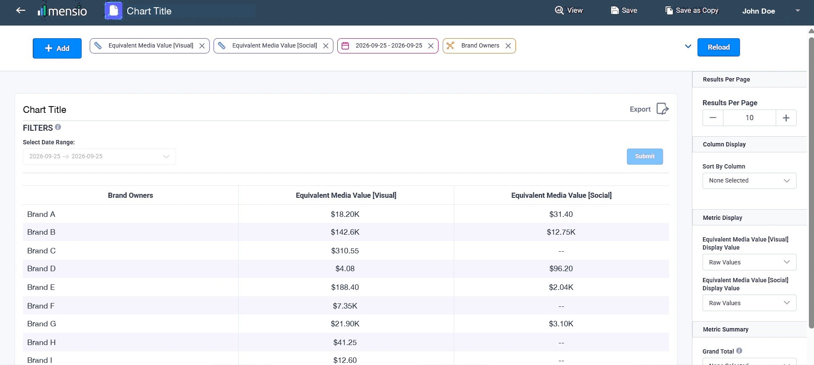
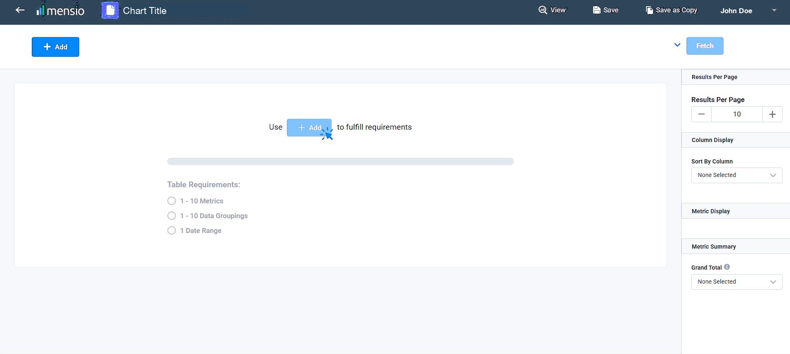
The problem
Every custom chart went through an analyst.
A one-line customer email became an eight-step process across two people and three tools.
A custom request, before and after
8 steps · 2 people · 3 tools · ~1 work day
6 steps · 1 person · 1 tool
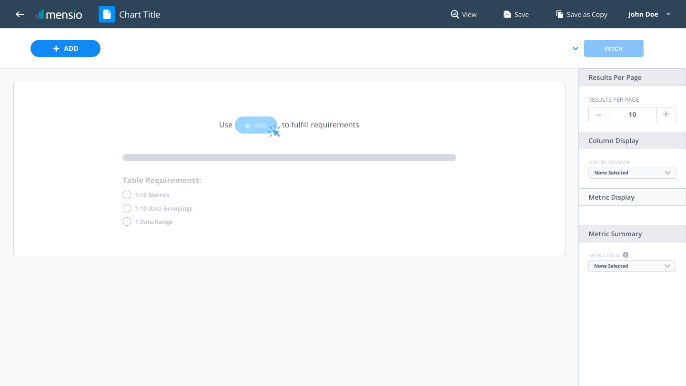
- One Add button for every metric, grouping, filter and date.
- Nothing appears until the requirements are met.
- The only guidance is a count: 1–10 metrics, 1–10 groupings, 1 date range.
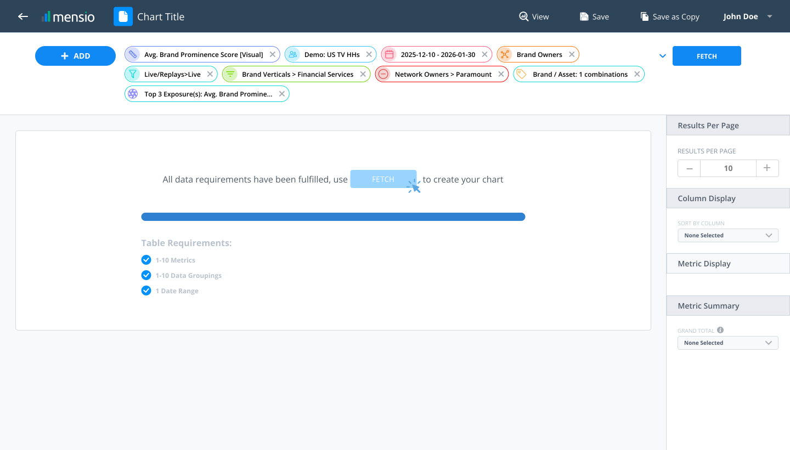
- Every choice becomes a chip in one row, with nothing grouping related filters.
- The requirements only count chips, so all three check off.
- Fetch, top right, unlocks even if the filters don't belong together.
Impact on analysts
Analysts spent most of their day fulfilling requests.
~1 day
end-to-end per request
85%
of an analyst's day: 50% clarifying and building requests, 35% exporting and cleaning (Analyst A)
1 in 3
requests came back for rework
Impact on the business
Customers couldn't see Mensio's value or potential unless they used it themselves.
- Low adoption
- Customers stopped using Mensio or relied on analysts.
- Weak renewals
- Buyers rarely used the product after the demo, so they couldn't speak to its value at renewal.
- Capped value
- Mensio's full value was only reachable through the analytics team.
The insightThe process lived in analysts' heads, so the product should ask the questions an analyst would.
The insight
The process lived in analysts' heads.
Accurate pulls depend on knowing which filters and exclusions go together. Adding teams, for example, requires home, neutral and non-game filters to avoid double-counting. None of it was documented.
Design goalHave the product ask the questions an analyst would.
Analyst interviews
We studied the analyst workflow to rebuild it for customers.
Since analysts were doing the work, we studied their workflow to understand what customers actually received. We used Mensio daily and interviewed the media analysts who handled customer requests.
What analysts told us
Analyst A Analyst B
Follow-up questions were consistent
Date range, live vs. replay, competitors, asset breakdown. Customers rarely specified these upfront.
Analysts over-pulled data
To avoid missing something, they pulled extra and filtered it in Excel.
Errors surfaced a month later
Finding a missing filter took about an hour, plus explaining the change to the customer.
Customers didn't understand the data model
Groupings and filters, such as programs vs. episodes, caused the most confusion.
“Customers would email us with one sentence that usually just included the metric and TV program or brand.”
“We then have to follow up and ask for the date range, whether they want shoulder programming, whether they want live events…”
“Sometimes it is too complex or there are too many questions, so we have to hop on a call to clarify.”
“0–2 times, depending how specific they are in the original ask.”
“Often we pull way more data than we eventually need because we are afraid to miss something.”
“We export more data than we need and manually filter out what we don't need in Excel.”
“35% of the day is spent exporting the data and manually cleaning up the data exports.”
“Usually it helps to see 4/5 different versions of a pull to fully contextualize the results.”
“The bulk of the time is when we have to go back and add a metric about a month later.”
“Usually once in every three data requests.”
“There is no checklist, so you are trying to remember off the top of your head…”
“When you add teams, you want to add home, neutral site and non-game filters, but exclude away games to not double count.”
“Understanding basic data groupings: Brands, Programs, Episodes, Asset Types, Logo Occurrences, Networks.”
“Users often don't understand how to interpret the data when segmented in different ways.”
“Clients only get the Excel usually because they don't know how to modify the chart.”
“We don't want them to change anything by accident and ruin the chart.”
The analysts' follow-up questions became the structure of the wizard.
Wishlist to roadmap
We merged stakeholder requests and research findings into one roadmap.
Stakeholders brought a wishlist, led by a left-to-right flow. We validated each item against the interviews and prioritized what to build.
The stakeholders' left-to-right vision
Stakeholders pointed to the Domino's Pizza Tracker: always show where you are.
One page. Options open up as you move left to right.
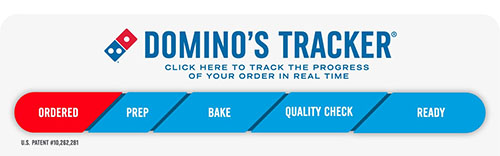
Streamlined left-to-right flow
Build a chart in sequence, not all at once
Same questions, every request
Analysts asked the same follow-ups, in the same order
Guided Setup
Five sequential steps, from metrics to review
Show only what's relevant
Guide customers through filter choices
Hidden nuances in data
Filters confused customers; 1 in 3 requests needed rework
Progressive options
Each step shows only what fits, with tooltips and guardrails
Offer pre-set views
Answers to the questions customers ask most
Repeated requests
Most were a metric plus a brand or program
Six presets
Based on the most common use cases
We chose a wizard as the core pattern. It matched the stakeholders' left-to-right vision and mirrored how analysts already worked.
Customer groups
Customer groups shaped the wizard's two branches.
Stakeholder interviews with the analytics team sorted customers into four groups by how they use Mensio. From one entry point, people choose how to build a chart: a preset for recurring questions, or Guided Setup for everything else.
Four customer groups, from most guidance to least
New users & requesters
Senior and junior users who email the team instead of learning the tool. Often the budget owners.
Built for them
Guided SetupHigh-involvement users
Use Core Modules daily, and email the team for a custom pull every two weeks.
Built for them
PresetsPower users
Edit charts in their custom dashboards, but wouldn't build one from scratch.
Built for them
PresetsDuplicate ChartAdd to DashboardSuper users
Run about 100 queries a month in Data Explorer, but make mistakes they don't know about.
Built for them
Guardrails on every filter
Navigating the mess
Three flow variations led to our final wizard.
Feedback from analysts, engineers and stakeholders shaped each version.
Started with
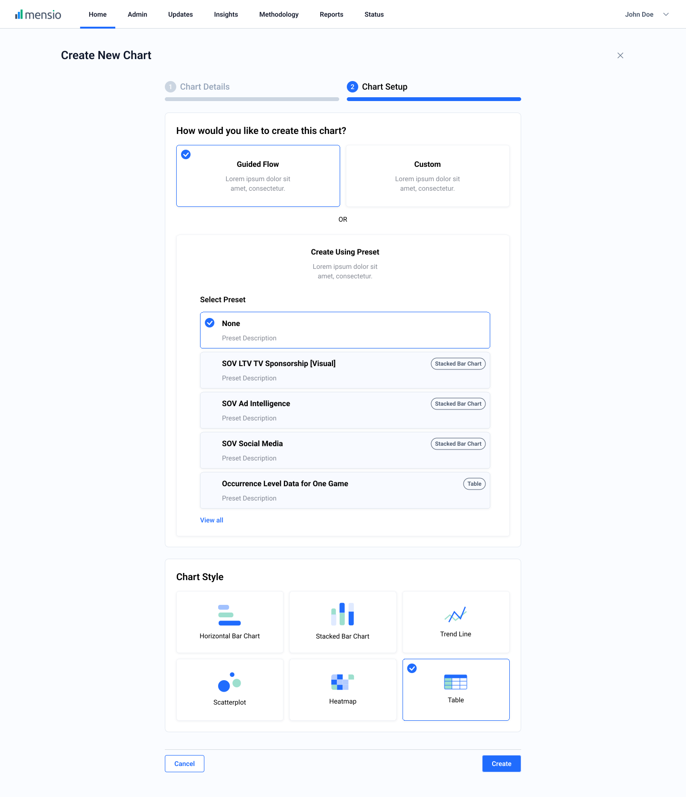
Ended with
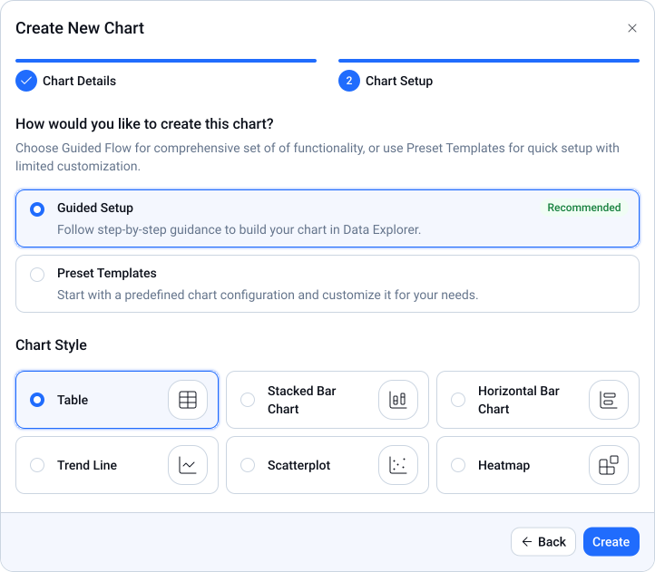
Started with
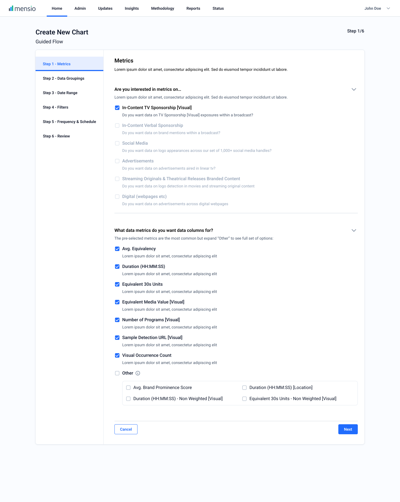
Ended with
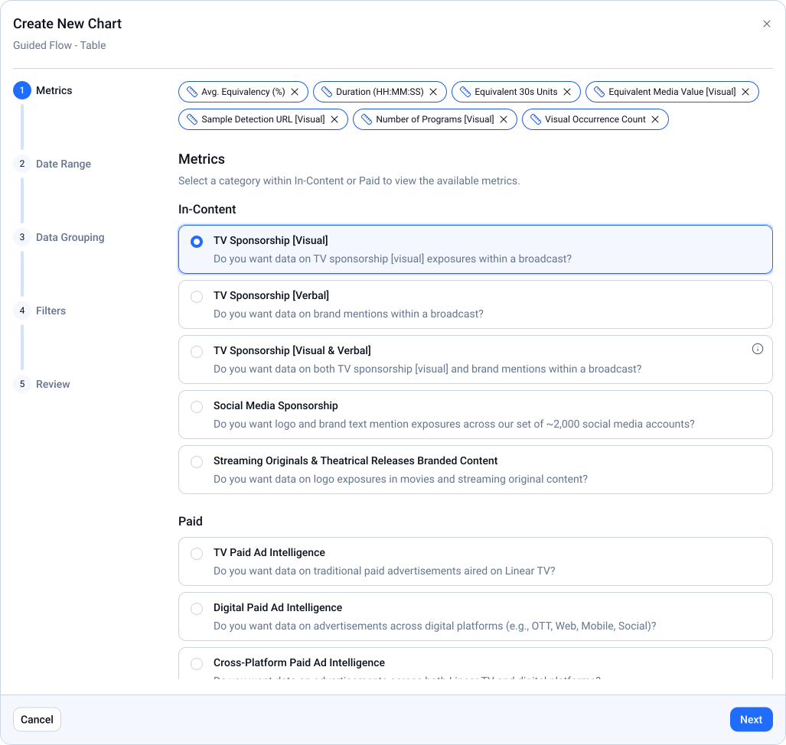
Started with
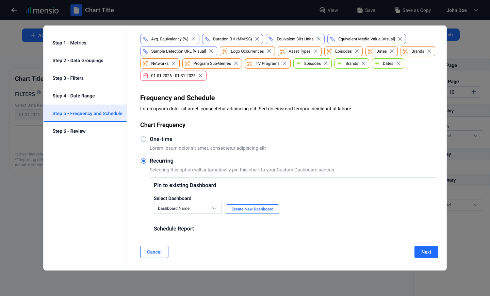
Ended with
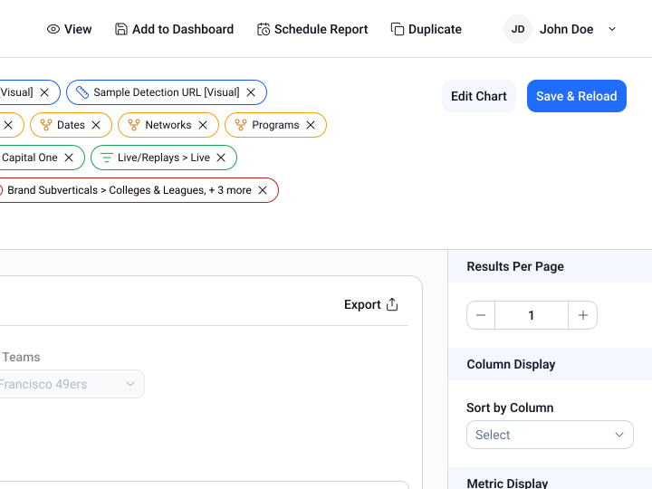
Testing
The analysts tested Guided Setup and the presets.
The analytics team tested Guided Setup and the six presets throughout the build. They had no major feedback: the workflow is streamlined, and the guardrails mean they no longer work from memory.
~60%
less analyst time per custom request
The solution
Six design decisions shaped the new chart builder.
Customers pick a preset, or follow Guided Setup's five steps.
A custom chart now: 6 steps, 1 person, 1 tool
- 1Preset or Guided
- 2Metrics
- 3Date range
- 4Groupings
- 5Filters
- 6Review & Fetch

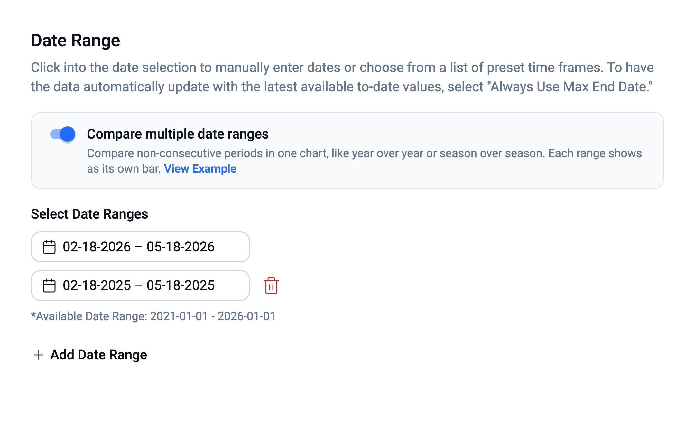
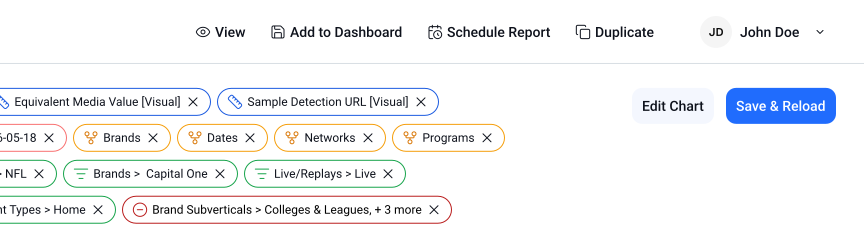
Guided Setup, step by step
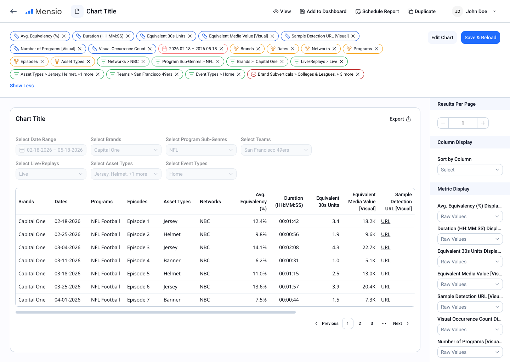
Try it: pick a metric, click Next or a step, and scroll inside the modal.
Design x Engineering
We designed within the backend's rules.
We acted as our own PMs, worked within the rules for valid chart combinations, asked for a Seasons API, and triaged QA by priority across a 14-week build.
In parallel, we refreshed Mensio's dated UI: new colours, and components rebuilt on the latest shadcn components as we built the Data Explorer flow.
Design QA, triaged P0–P4: 34 issues
Impact & reflection
Customers now build their own charts.
The new chart builder shipped in September 2026. Customers now pull their own data without going through an analyst. They compare date ranges in one chart instead of stitching charts together in Excel, and they know where the exclusion filters are and why they matter.
1 day → minutes
from question to chart
2 → 1
people: the customer, with no analyst in the loop
3 → 1
tools: Mensio, instead of email, Data Explorer and Excel
Early signals
−40%
custom data requests to analysts since launch
3×
charts built by customers themselves
~10 min
from question to chart, down from about a day
Customer feedback“I pulled our season numbers myself in ten minutes. That used to take a day of back-and-forth with the analytics team.” Brand partner
Encode expert knowledge into the product
Presets, defaults and tooltips now ask what analysts used to ask over email.
Design with constraints, not against them
Working within the backend's rules shaped a simpler flow.
What didn't work
Our first versions: three entry paths, a full-page wizard and a scheduling step. Analysts caught each one early, and we iterated.
What's next
Measure adoption across a full renewal cycle, and save charts as people build them so a reload never wipes their work.